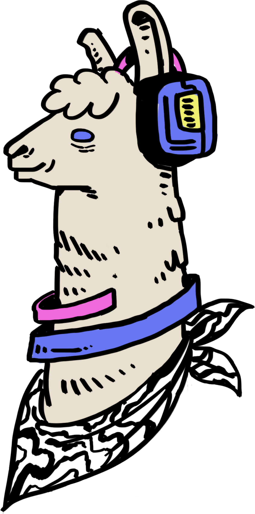

Quem lhama
com a gente?
Pra conhecer
no UP

Ätzøk · Chillout
Artista · Pista
Artista · Pista
UNIVERSO PARALELLO · PISTA PRA TODO MUNDO · UNIVERSO PARALELLO ·
Sabia que o UP tem
pista pra todo mundo?
Pista pra quem dança psy, pra quem
quer techno e pra quem só quer deitar.
texto provisório